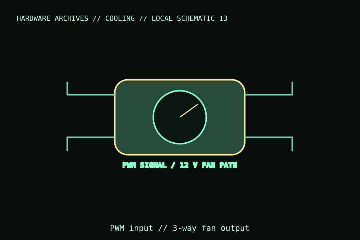

[ INDIVIDUAL COMPONENT // COOLING ]
Noctua NA-FC1
A compact controller for manual PWM fan-speed reduction, with a 3-way splitter and power/cabling accessories. It regulates the fan signal; it is not a replacement for a correctly rated source or thermal management.

IDENTIFICATION: Match the complete model name, suffix, article number, bundle, revision, and host manual to the physical label before installation. Similar product names and variants may use different wiring or dimensions.
Specifications
| Catalog subcategory | Thermal accessories |
|---|---|
| Exact model | Noctua NA-FC1 |
| Fan connection | 4-pin PWM fan control; bundled 3-way splitter and input/output cabling |
| Electrical limit | 12 V DC system; maximum total fan load 3 A per manufacturer documentation. |
| Control / host | Manual speed knob and low-speed/stop indication; behavior depends on fan minimum speed and host PWM signal. |
| Mount / clearance | Small inline controller; route cables clear of fan blades and avoid tension on headers. |
Compatibility, installation & service
- Keep the combined fan current at or below the manufacturer’s 3 A maximum and do not exceed the upstream power/header rating.
- Confirm pinout and voltage before attaching non-standard fans; do not confuse 4-pin PWM with 5 V ARGB or 12 V RGB leads.
- Test fan restart and tach feedback at the lowest setting; a low-speed setting is not a substitute for temperature monitoring.
Service notes
Power off before changing connections. Keep the dial and connectors free of dust and moisture; discontinue use if the cable, controller, or connector overheats or is damaged.
Manufacturer references
- Noctua — NA-FC1Manufacturer controller specifications and included accessories.
- Noctua — SupportManufacturer manuals and support reference.
Verify fit, wiring, and ratings against the manufacturer document for the exact unit and host. This catalog record is an identification aid, not a compatibility guarantee.